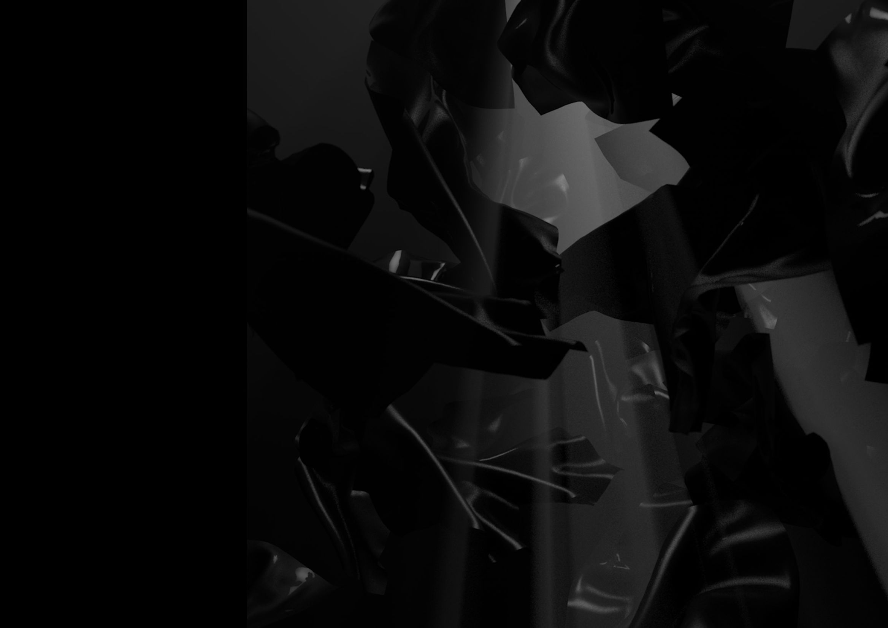
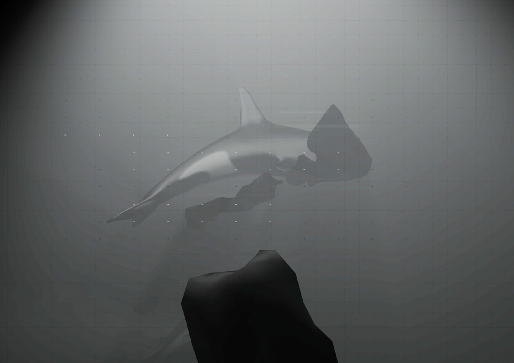
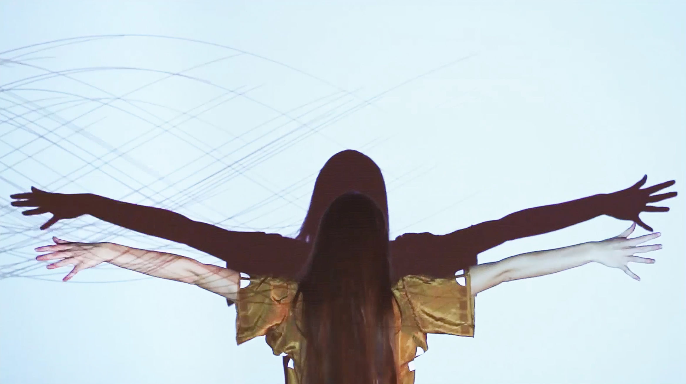
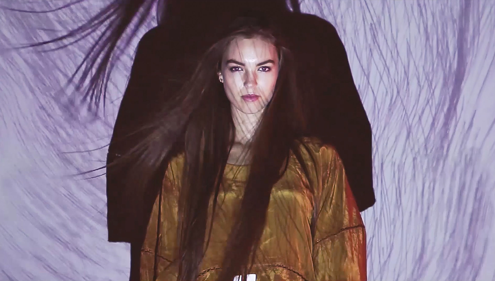
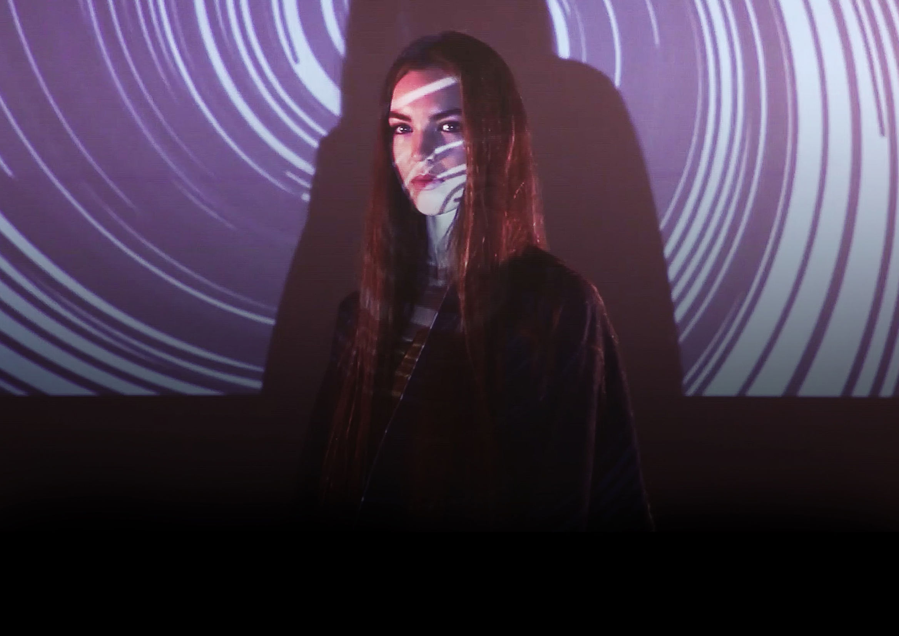
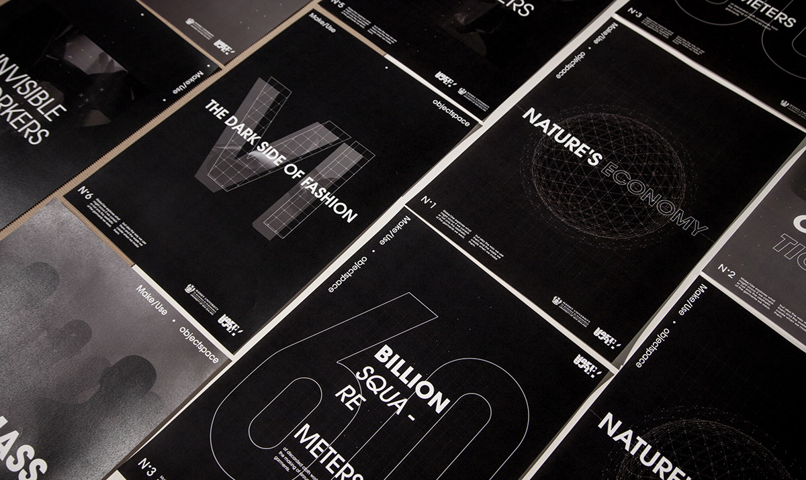
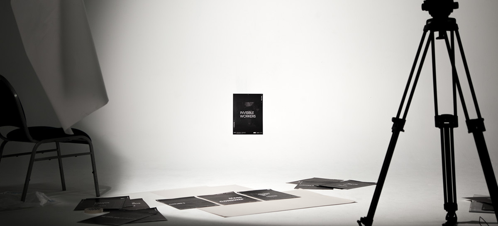

Dark Side of Fashion
Working alongside Luke Hoban on a class video project, we responded to the brief by the client "Make Use" to “persuade fashionistas to buy zero waste fashion”. We did this in the video titled "The Dark Side of Fashion".We Analyzed our target audience and found them to be highly influenced by clothing. We therefore needed to ensure our video would influence them enough to change their behavior in how they viewed Zero Waste clothing as just another purchase. We decided to educate our audience on the dark side of fashion to the environment and change their behavior towards fashion consumption. In our video we emphasized this impact by exploring a dystopia vs utopia relationship. Focusing on the corruption and negative of popular fashion in the dystopia. We then transitioned into the utopia, revealing the make use clothing as a solution to a more sustainable future.






